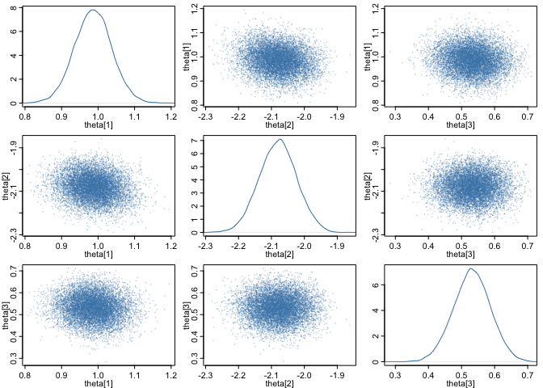

neuralsbi is an R-native package for Neural Simulation-based inference.
Neural estimators are implemented directly in R on the torch R package.
Installation
# install.packages("remotes")
remotes::install_github("pedroliman/neuralsbi")
# the neural back end (once)
install.packages("torch")
torch::install_torch()Usage
Simulation-based inference recovers parameters from a model you can simulate but whose likelihood you would rather not write down. To make that concrete, here is a plain linear regression, y = X beta + noise. We know the answer (ordinary least squares), so we can check that the posterior lands on the truth.
library(neuralsbi)
set.seed(1)
# A linear regression: intercept + two covariates, 100 observations.
N <- 100
X <- cbind(1, matrix(rnorm(N * 2), N, 2)) # design matrix
beta_true <- c(1, -2, 0.5) # the coefficients to recover
sigma <- 0.5 # noise standard deviation
# Simulator: given coefficients, simulate a data set and summarise it by the
# least-squares fit. Those fitted coefficients are the "data" the posterior sees.
fit_ols <- function(y) lm.fit(X, y)$coefficients
simulator <- function(theta) {
t(apply(theta, 1, function(beta) fit_ols(X %*% beta + rnorm(N, sd = sigma))))
}
# Prior over the three coefficients, then train the neural posterior.
prior <- prior_uniform(low = rep(-3, 3), high = rep(3, 3))
fit <- npe(prior, simulator, n_simulations = 3000)
# Observe one data set generated from beta_true, then infer the coefficients.
y_obs <- X %*% beta_true + rnorm(N, sd = sigma)
post <- posterior(fit, x_obs = fit_ols(y_obs))
draws <- sample(post, 10000)The posterior mean recovers the ground-truth coefficients:
rbind(truth = beta_true, posterior_mean = colMeans(draws))
#> [,1] [,2] [,3]
#> truth 1.0000000 -2.000000 0.5000000
#> posterior_mean 0.9862805 -2.080193 0.5313938
pairplot(draws) # joint and marginal views of the posterior
The same posterior supports point estimates and calibration checks:
map_estimate(post) # posterior mode
sbc(fit, simulator) # simulation-based calibrationIf you’re interested in sbi in other languages or functionality not available here, see the awesome neural SBI repo; there are some good implementations in python and in Julia.
Learn more
The package website has four vignettes that build on each other:
- Getting started — the core prior/simulator/posterior workflow.
- Choosing a density estimator — MDN, MAF, NSF, and the torch-free baseline.
- Checking the posterior — calibration and predictive diagnostics.
- Case study: an SIR epidemic model — the full Bayesian workflow on an applied problem.